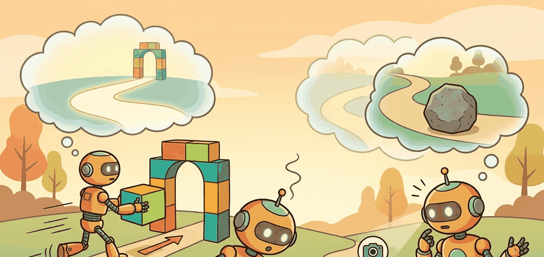

Generate the whole future as one object, then bend it toward high reward with a guidance gradient; the plan and the optimizer become the same forward pass.
A Trajectory-Level Planner

This section assumes familiarity with domain randomization and synthetic data pipelines from section 13.2, and with offline RL dataset construction from section 25.3. The guidance-weight trade-off introduced here is the central concern of section 41.5, which covers the risks of generated experience in detail. The scene-coverage ideas also recur in Part IX alongside active data collection and curiosity-driven exploration.
A robot that has seen ten thousand real kitchens still fails in the eleven-thousandth. Collecting physical experience at scale is slow, expensive, and dangerous. Generative scene synthesis breaks that bottleneck: a diffusion model conditioned on a task description can produce photorealistic environments, diverse object arrangements, and plausible contact trajectories on demand. Right now, teams are training manipulation policies entirely on synthetic episodes, then deploying on real hardware with minimal fine-tuning. By the end of this section you will understand how guided diffusion generates that synthetic data, why the guidance weight is the critical knob, and how a feasibility filter keeps generated scenes from lying to the policy.
Planning with generative models reframes the planner as a sampler. Diffuser (Janner et al., 2022) generates a full trajectory at once by diffusion, then steers that generation toward high reward with classifier guidance, so the act of planning and the act of optimizing collapse into the same denoising forward pass. Decision Diffuser instead conditions on a desired return-to-go for offline reinforcement learning, sampling trajectories that the dataset suggests will achieve that return. The same generative machinery also produces candidate futures and synthetic scenes that planners and learners can consume.
The catch is shared across all of these uses: generated trajectories and scenes help only when they stay near the real control regime, and the guidance that makes them high-reward can also pull them off the data manifold. The right framing is generation as a proposal engine whose proposals must survive a feasibility check, whether the proposal is a planned trajectory or a synthetic training scene.
A model earns its place only when it improves action. In Generating Scenes And Synthetic Experience, the reader should keep asking which decision changes, which uncertainty is exposed, and which failure mode becomes easier to diagnose.
Theory
Diffuser denoises an entire trajectory $\tau$ and biases sampling toward high reward using classifier (or classifier-free) guidance. At each reverse step the unconditional noise prediction is combined with a conditional one to form a guided estimate
$$ \tilde\epsilon_\theta = (1+w)\,\epsilon_\theta(\tau_t, t, c) - w\,\epsilon_\theta(\tau_t, t), $$
where $c$ is the conditioning (a goal or a high-return signal) and $w$ is the guidance weight. With $w=0$ the sample is unconditional; larger $w$ pushes harder toward the conditioned objective. The trade-off is direct: strong guidance shapes more goal-directed plans but can drag samples off the data manifold into dynamically infeasible trajectories, which is why a feasibility filter still sits downstream. Decision Diffuser uses this same conditioning mechanism with the return-to-go as $c$, turning offline reinforcement learning into conditional trajectory generation.
A practical cost note frames the rest of the chapter: generative planning pays 20 to 50 denoising steps at inference for every plan, against a single forward pass for a deterministic policy. That latency is the price of multimodality and guidance, and it is exactly what the speedup work in Section 41.5 attacks.
When generated trajectories are reused as training data, a dataset mixes real trajectories $\mathcal{D}_r$ with generated ones $\mathcal{D}_g$ under a weight $\alpha$, $\mathcal{L}(\theta)=\mathbb{E}_{\mathcal{D}_r}[\ell_\theta] + \alpha\,\mathbb{E}_{\mathcal{D}_g}[\ell_\theta]$. The hard part is not the mixture; it is ensuring $\mathcal{D}_g$ adds coverage near task-relevant but underrepresented states rather than injecting trajectories that violate real embodiment dynamics. The mixture weight $\alpha$ matters physically because a real robot's policy must generalize to hardware dynamics, not just to the synthetic distribution: too much synthetic data shifts the policy toward configurations that never occur on actual joints, surfaces, and sensors, causing silent degradation at deployment. Mechanically, $\alpha$ is tuned by holding out a hardware evaluation set, training policies at several values of $\alpha$ on the same real-plus-synthetic mix, and selecting the value that minimizes the transfer gap; the rejection rate from the verifier is monitored jointly, because a low transfer gap achieved by discarding most synthetic proposals gives no coverage benefit.
Algorithm: Guided Synthetic Scene Generation and Dataset Augmentation
Input: real dataset $\mathcal{D}_r$, scene diffusion model $p_\theta$, guidance weight $w$, mixture weight $\alpha$, verifier $V$, target coverage region $\mathcal{R}$, denoising steps $T$
Output: augmented training dataset $\mathcal{D}_r \cup \mathcal{D}_g^*$, policy parameters $\theta^*$
- Identify underrepresented region $\mathcal{R}$ by computing state-space density from $\mathcal{D}_r$; flag bins with fewer than a threshold count as coverage gaps.
- For each desired synthetic sample, draw a conditioning signal $c \sim \mathcal{R}$ (a rare state, contact configuration, or scene description targeting the coverage gap).
- Initialize trajectory or scene $\tau_T \sim \mathcal{N}(0, I)$ and run the guided reverse diffusion loop for $t = T, T{-}1, \ldots, 1$: $$\tilde{\epsilon}_\theta = (1+w)\,\epsilon_\theta(\tau_t, t, c) - w\,\epsilon_\theta(\tau_t, t), \qquad \tau_{t-1} = \tau_t - \eta\,\tilde{\epsilon}_\theta.$$
- Obtain the denoised proposal $\hat{\tau} = \tau_0$.
- Apply verifier $V(\hat{\tau})$: check geometric feasibility (no interpenetration, valid contact normals), dynamic plausibility (within reach radius, gravity consistent), and realism score; reject proposals that fail any criterion.
- Collect accepted proposals into generated set $\mathcal{D}_g$; repeat steps 2 to 5 until $|\mathcal{D}_g|$ meets the target budget.
- Form the augmented dataset with mixture weight $\alpha$: $\mathcal{L}(\theta) = \mathbb{E}_{\mathcal{D}_r}[\ell_\theta] + \alpha\,\mathbb{E}_{\mathcal{D}_g}[\ell_\theta]$.
- Train or fine-tune policy $\pi_\theta$ on the augmented dataset, using the same seed panel and evaluation split as the real-data baseline.
- Evaluate transfer gap: run $\pi_\theta$ on hardware (or a held-out simulation split) and compare against the policy trained on $\mathcal{D}_r$ alone.
- If transfer gap is positive (synthetic policy performs worse), reduce $\alpha$ or tighten the verifier $V$ and return to step 2; otherwise record $\mathcal{D}_g^*$ and $\theta^*$ as the accepted augmentation.
Classifier-free guidance trains one network to produce both conditional and unconditional noise predictions (by randomly dropping the condition during training), then combines them at sampling time with weight $w$. No separate classifier is needed, and $w$ becomes a single inference-time dial that trades goal adherence against on-manifold realism.
Worked Example
The probe below shows classifier-(free)-guidance trajectory planning and the guidance-weight trade-off Diffuser depends on. From the same noisy start it runs a guided denoising loop at three values of $w$, combining a conditional denoiser (pulls the endpoint to the goal) with an unconditional one (pulls toward an on-manifold prior). We report the endpoint, its distance to the goal, and whether it stays inside a feasible reach radius.
# Guided trajectory denoising (Diffuser-style).
# eps_tilde = (1 + w) eps_cond - w eps_uncond ; w trades goal-pull vs on-manifold pull.
import numpy as np
H = 5
goal = np.array([1.0, 0.0])
feasible_radius = 1.15 # endpoints beyond this are dynamically infeasible
def eps_uncond(tau): # stand-in: pull toward a smooth on-manifold prior
prior = np.stack([np.linspace(0.0, 0.6, H), np.zeros(H)], axis=1)
return tau - prior
def eps_cond(tau, c): # stand-in: pull the trajectory toward the goal c
target = np.stack([np.linspace(0.0, c[0], H), np.linspace(0.0, c[1], H)], axis=1)
return tau - target
for w in [0.0, 1.0, 4.0]:
rng = np.random.default_rng(4) # same start for every w
tau = rng.normal(size=(H, 2)) * 0.3
for _ in range(8): # guided reverse steps
eps_tilde = (1 + w) * eps_cond(tau, goal) - w * eps_uncond(tau)
tau = tau - 0.2 * eps_tilde
endpoint = tau[-1]
dist = float(np.linalg.norm(endpoint - goal))
feasible = float(np.linalg.norm(endpoint)) <= feasible_radius
print(f"w={w:>3}: endpoint={endpoint.round(3).tolist()} "
f"dist_to_goal={dist:.3f} feasible={feasible}")w=0.0: endpoint=[0.751, 0.012] dist_to_goal=0.249 feasible=True
w=1.0: endpoint=[1.084, 0.012] dist_to_goal=0.085 feasible=True
w=4.0: endpoint=[2.083, 0.012] dist_to_goal=1.083 feasible=FalseThe three rows are the whole story of guidance. At $w=0$ the plan stays comfortably feasible but stops short of the goal; at $w=1$ it reaches the goal and is still feasible; at $w=4$ it overshoots far past the feasible reach radius. This is why Diffuser pairs guidance with a feasibility check: turning $w$ up makes plans more goal-directed right up to the point where they leave the manifold of trajectories the robot can actually execute. Decision Diffuser swaps the goal condition for a return-to-go target, but the same dial and the same risk apply.
When tuning the guidance weight w in Diffuser or Diffusion Policy, calibrate it against the planning horizon H jointly, not in isolation. A weight that keeps plans feasible at H=5 will routinely push them off the data manifold at H=20, because guidance errors compound across steps. A reliable heuristic is to sweep w at your largest intended horizon first, lock that value, then verify it is not too conservative at shorter horizons. Logging the ratio of feasibility-check rejections to total samples (rather than just final task success) gives an early signal that w has drifted into the infeasible regime before downstream policy performance degrades.
For Generating scenes and synthetic experience, the hand-built probe exposes the planning assumption; Diffuser-style or Decision-Diffuser-style tooling should preserve the same logging and evaluation fields.
Practical Recipe
- Anchor the generator to a physical platform: specify the robot (Franka Panda, UR5, Spot), the sensor suite (RGB-D at 30 Hz, wrist-mounted F/T sensor at 500 Hz), and the simulator (Isaac Sim, MuJoCo, PyBullet) before choosing a diffusion architecture.
- Identify the real-data coverage gap by computing state-space density over your existing dataset. For tabletop manipulation, this typically means scenes in Open X-Embodiment or RT-X where specific object poses or clutter configurations appear fewer than 50 times.
- Set the guidance weight
wby sweeping from 0.5 to 4.0 on your longest intended horizon first. For a Franka Panda with H=20 steps at 10 Hz, values above 2.5 routinely push endpoints outside the 855 mm reach envelope and should be rejected by the geometric verifier before entering training. - Apply a three-stage verifier: (a) geometric feasibility (no interpenetration, contact normals inward, within reachability map), (b) dynamic plausibility (joint velocity limits, torque bounds), and (c) a sim round-trip where MuJoCo executes the trajectory and measures drift from the generated keyframes.
- Save one artifact per augmentation run: real-sample count, synthetic-sample count, guidance weight, verifier rejection rate, mixture weight alpha, and transfer gap (policy success rate on hardware minus success rate on sim held-out split). Without the rejection rate, a low transfer gap may simply mean the verifier discarded all informative proposals.
Students often assume that increasing the guidance weight w produces strictly better synthetic training data because higher guidance makes generated scenes and trajectories more goal-directed. This is wrong in an embodied AI context because the same guidance gradient that steers samples toward high-reward configurations also pulls them away from the manifold of states the real robot can physically reach or execute. A generated trajectory with w=4 may end precisely at the goal in feature space while violating joint limits, interpenetrating objects, or demanding torques the hardware cannot produce. The correct mental model is that guidance weight controls a trade-off, not a quality dial: the useful operating range is the narrow band where goal-directedness and physical feasibility coexist, and that band must be found empirically per platform and horizon, not assumed to grow with w.
Synthetic scene generation fails in two characteristic ways. First, a scene generator trained on a limited real dataset tends to reproduce the modal scene distribution (a tidy tabletop, uniform lighting, canonical object poses) rather than the rare corners that motivated synthetic data in the first place. The result is a large synthetic set that duplicates real coverage and adds no transfer benefit. Second, the guidance gradient that makes generated scenes visually plausible (high discriminator score, low reconstruction loss) is not the same as physical plausibility: objects can interpenetrate, contact normals can point the wrong way, and gravity can be implicitly violated. A downstream policy trained on such scenes learns to expect configurations that never occur on hardware, and performance drops precisely in the novel situations the synthetic data was supposed to cover.
A home-robot team has very few real examples of dropped utensils sliding under furniture. They generate physically plausible scenes and replay trajectories around those failures, then use the synthetic set only to train a retrieval head and recovery policy proposal model. The synthetic data is valuable because it covers a rare corner of the task, not because it replaces the real distribution.
Synthetic experience is useful fertilizer, not a substitute for the plant.
The active frontier is selective synthetic data generation: produce scenes or episodes exactly where real coverage is sparse, then validate them with learned realism filters, simulator checks, and held-out transfer panels. That is much more defensible than dumping huge volumes of synthetic rollouts into the training mix.
For Generating scenes and synthetic experience, connect diffusion-policy tooling, MPC baselines, and safety constraints by recording the planner input, sampled plan, feasibility check, and executed action.
Can you state the observation, state estimate, action, prediction horizon, success metric, and most likely failure mode for Generating scenes and synthetic experience? If not, the system boundary is still too vague.
Synthetic data helps when three conditions hold together: real coverage is sparse in the target region, the generator can be conditioned on that region specifically, and a verifier (simulator check, geometric filter, or learned realism classifier) can reject off-manifold proposals before they enter training. The payoff when all three are met can be striking: teams targeting rare contact failures have cut the number of required real demonstrations from roughly 2,000 to under 200 by filling coverage gaps with verified synthetic scenes, a 10x reduction in real-data cost for the same downstream policy success rate. When any one of these is missing, the mixture tends to hurt. A generator conditioned on a broad return signal will fill in high-return but physically impossible transitions; a verifier that only checks visual realism will pass scenes with violated contact constraints; and an unconditioned generator will simply oversample the already-dense part of the distribution. The practical signal to watch is transfer gap: if a policy trained on real-plus-synthetic performs worse on hardware than one trained on real alone, the synthetic component is likely adding distributional shift rather than coverage. The most reliable pattern is to use generation as a data proposal engine and keep a conservative verifier downstream. Scene generators propose clutter, lighting, camera poses, or long-horizon futures; simulators, geometric filters, and held-out hardware tests decide whether those proposals are worth learning from.
For teaching and production alike, insist on one artifact that records real-sample count, synthetic-sample count, weighting, realism checks, and transfer outcome. Without that bookkeeping, synthetic data stories are nearly impossible to audit.
| Tool or Library | Role in This Topic | Builder Advice |
|---|---|---|
| Diffuser | Supports trajectory denoising, conditional planning, synthetic experience, and generated-action risk control. | Use it after the from-scratch probe states the same observation, action, metric, and failure tag. |
| Decision Diffuser | Supports trajectory denoising, conditional planning, synthetic experience, and generated-action risk control. | Use it after the from-scratch probe states the same observation, action, metric, and failure tag. |
| Diffusion Policy | Supports trajectory denoising, conditional planning, synthetic experience, and generated-action risk control. | Use it after the from-scratch probe states the same observation, action, metric, and failure tag. |
| PyTorch | Supports trajectory denoising, conditional planning, synthetic experience, and generated-action risk control. | Use it after the from-scratch probe states the same observation, action, metric, and failure tag. |
| Gymnasium | Supports trajectory denoising, conditional planning, synthetic experience, and generated-action risk control. | Use it after the from-scratch probe states the same observation, action, metric, and failure tag. |
For Generating scenes and synthetic experience, keep one inspectable probe for the model assumption, then use maintained libraries without changing the artifact schema used for baseline comparison.
- Write the observation, action, state estimate, success metric, and rejection criterion.
- Run a deterministic smoke test on one seed and save the complete configuration.
- Add one perturbation tied to the section topic: delay, noise, horizon length, contact change, distractor object, or generated-scene shift.
- Compare only methods evaluated by the same script, split, seed panel, and metric definition.
- Record a postmortem that assigns failures to perception, representation, dynamics, planning, control, data coverage, timing, or evaluation.
When Generating scenes and synthetic experience fails, do not collapse the result into a single method verdict. Assign the failure to the interface that broke, rerun one controlled perturbation, and keep the trace next to the metric. That habit turns a disappointing rollout into a reusable diagnostic asset.
Generating Scenes And Synthetic Experience is useful when it improves a measured closed-loop decision, exposes its uncertainty, and leaves behind an artifact that another reader can replay.
Design a minimal experiment for Generating scenes and synthetic experience. Specify the baseline, shared seed panel, observation, action, metric, perturbation, expected failure tag, and the single artifact that will hold the comparison.
Bibliography & Further Reading
Primary References And Tools
Janner, M. et al.. "Planning with Diffusion for Flexible Behavior Synthesis." (2022). https://arxiv.org/abs/2205.09991
Diffuser is the core trajectory-denoising reference for planning. It shows how sampling and conditioning can replace a hand-designed optimizer in some offline decision problems.
Ajay, A. et al.. "Is Conditional Generative Modeling All You Need for Decision Making." (2022). https://arxiv.org/abs/2211.15657
Decision Diffuser frames decision making as conditional generation. It is useful for comparing return conditioning, goal conditioning, and trajectory feasibility.
Chi, C. et al.. "Diffusion Policy: Visuomotor Policy Learning via Action Diffusion." (2023). https://arxiv.org/abs/2303.04137
Diffusion Policy is the practical robotics anchor for action diffusion. It helps readers connect planning-style denoising with continuous robot control from visual observations.
Huang, Z. et al.. "DiffuserLite: Towards Real-Time Diffusion Planning." (2024). https://arxiv.org/abs/2401.15443
DiffuserLite focuses on planning frequency and sample efficiency. It is relevant whenever a diffusion planner must fit into a real control loop rather than an offline demonstration.
Yang, R. et al.. "What Makes a Good Diffusion Planner for Decision Making." (2025). https://arxiv.org/abs/2503.00535
This large empirical study examines design choices in diffusion planning. It is a useful guardrail against treating denoising as a universal planner without checking architecture, guidance, and evaluation details.